Manufacturing roots
Quangang Craft established in Quanzhou, focused on resin and ceramic decorative products.
Manufacturing / Quanzhou, Fujian
From tooling and hand finishing to quality checks and export packing, we coordinate the production path around your product.
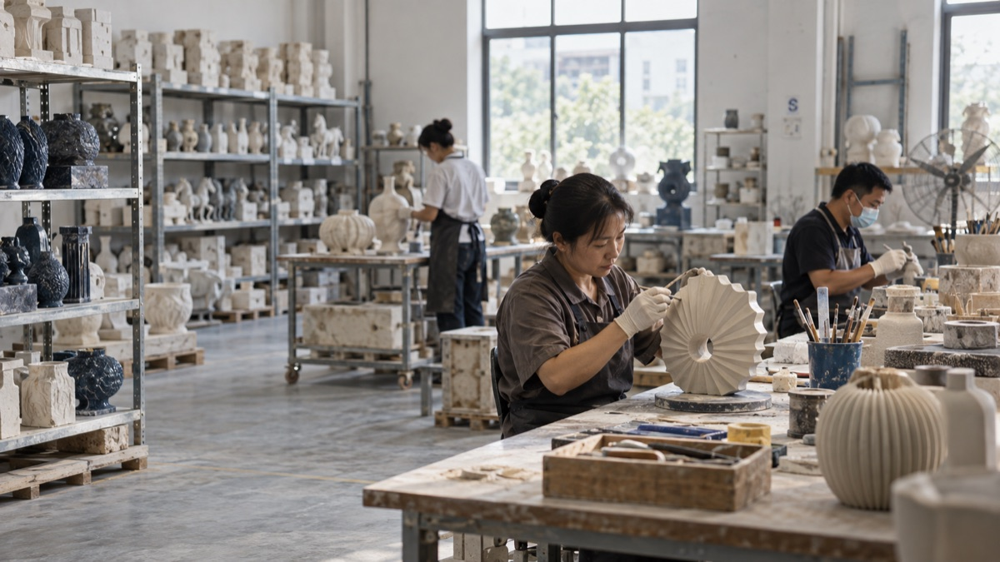
01 / Manufacturing roots
Factory knowledge informs product development, sourcing decisions and production planning today.
Quangang Craft established in Quanzhou, focused on resin and ceramic decorative products.
Able connects product briefs with affiliated manufacturing, specialist partners and export preparation.
Quangang Craft Co., Ltd. is an affiliated manufacturing facility and a separate legal entity from Able Trading Co., Ltd.
02 / How production is matched
Material, process, volume and destination determine the production resources.
Product, market, quantity and target.
What you needFeasibility, cost, quality and timing.
Route definitionResin, ceramic, casting and hand finishes.
Craft-led decorative productsWood, textile, metal and mixed materials.
Matched by process3D, prototype, tooling and packaging.
Used where needed03 / Inside production
Follow how an approved specification moves toward a packed production order.
Scroll to follow the stages
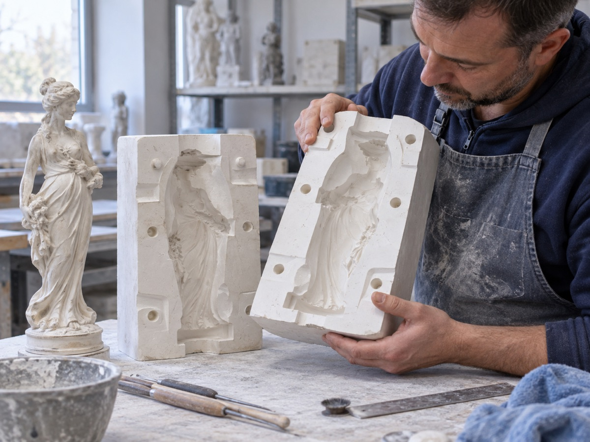
01Prepare the master, mould and repeatable production method.
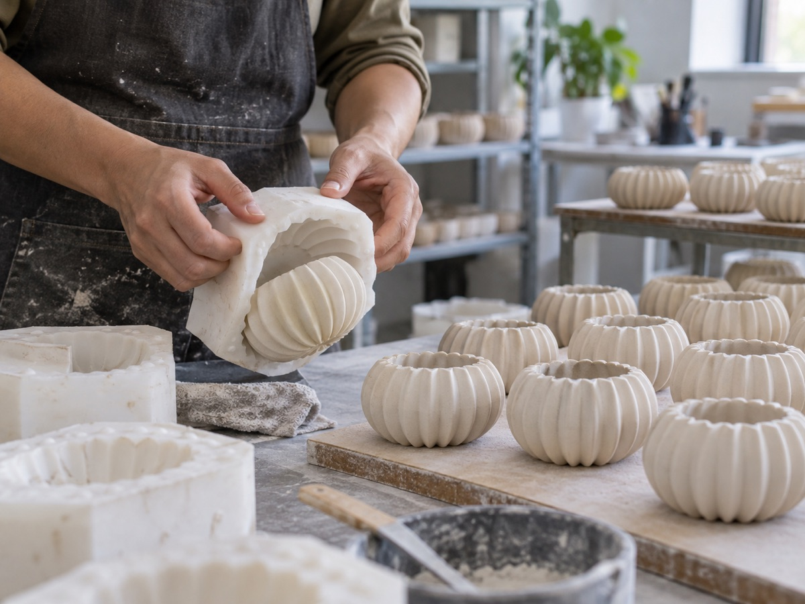
02Create consistent forms around the agreed construction.
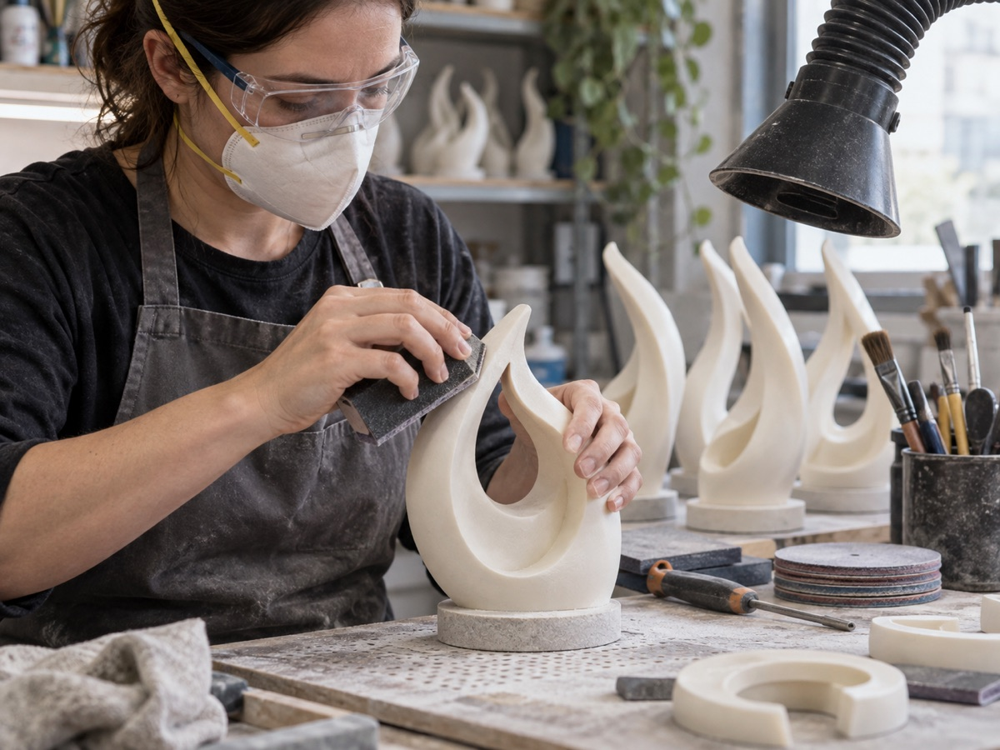
03Refine seams, edges and surfaces before decoration.
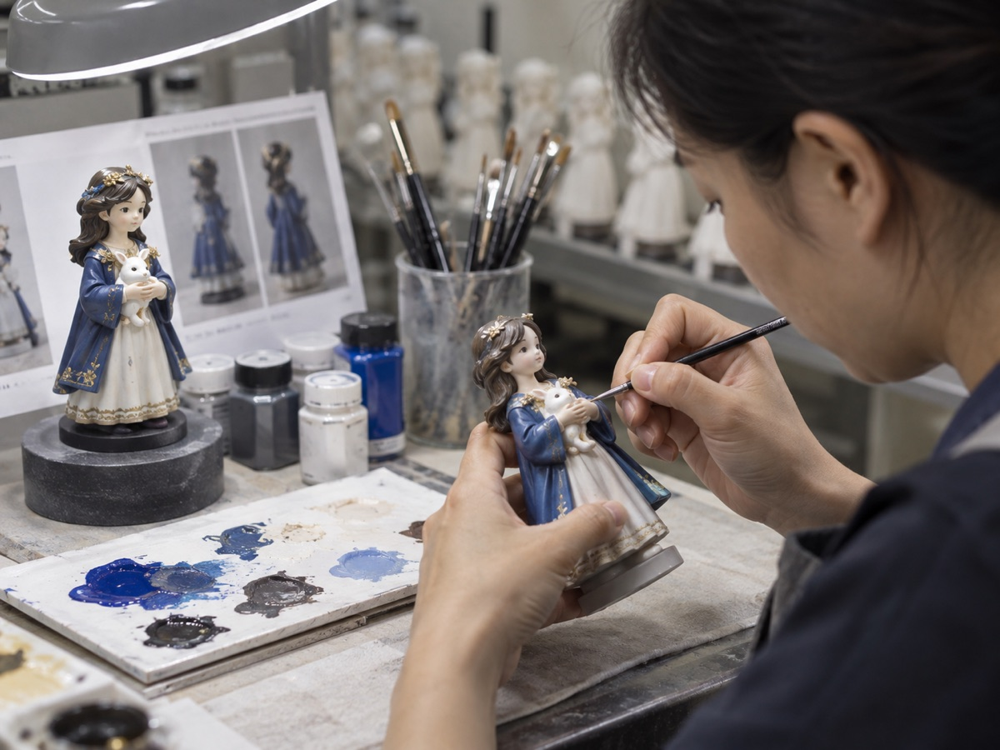
04Apply colour and detail against the approved reference.
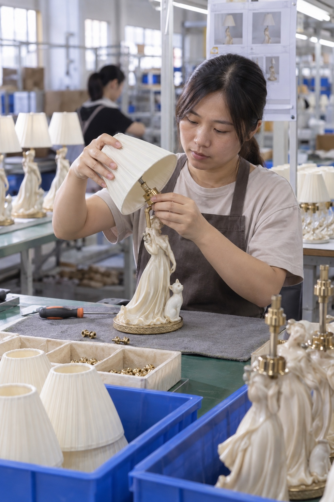
05Fit components and check stability, alignment and function.
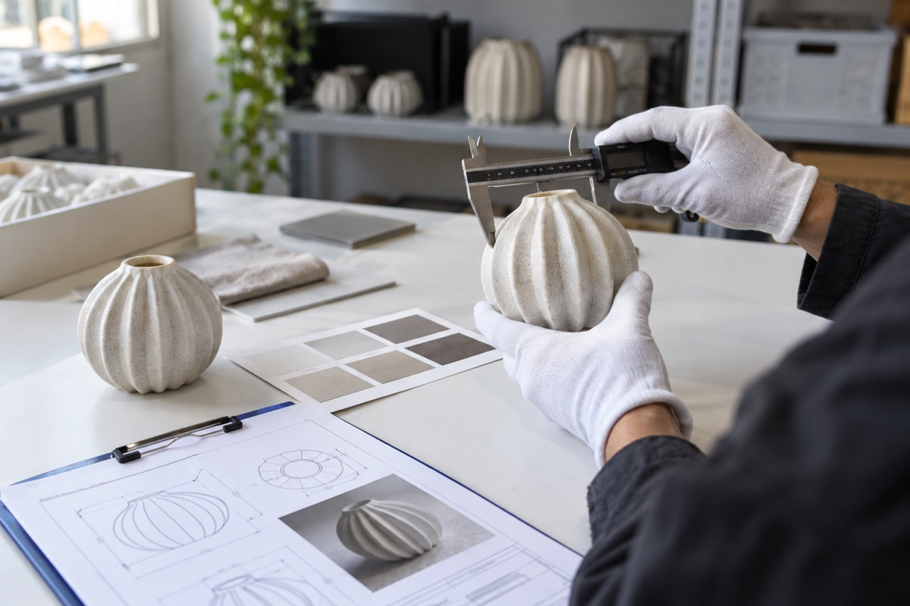
06Check dimensions, colour, finish and agreed details.
Protect the product and prepare retail presentation.
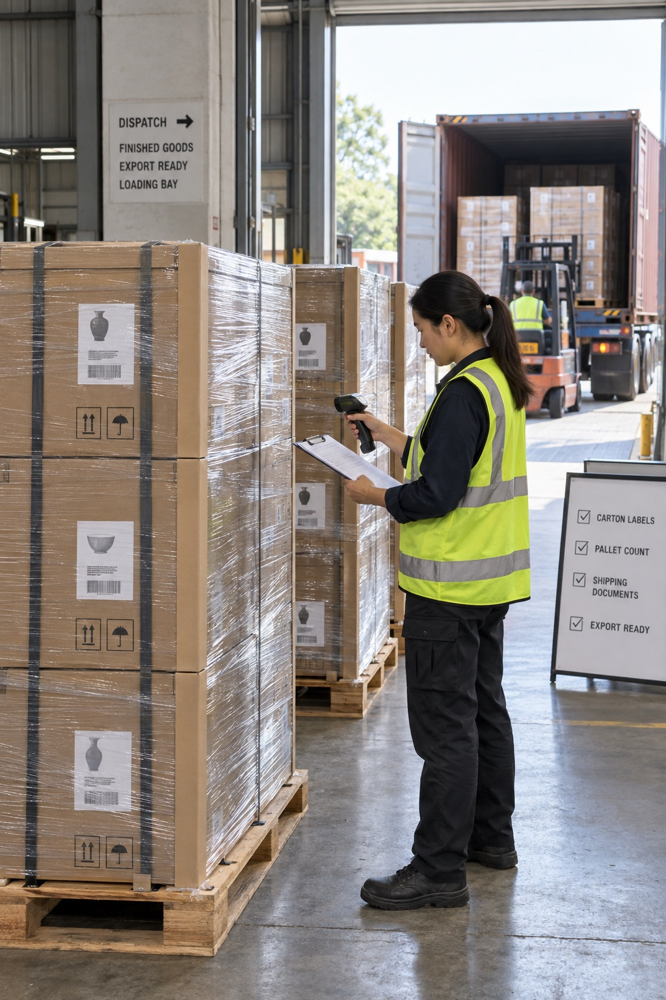
08Verify labels, cartons and shipment requirements.
Illustrative production imagery. Actual routes vary by material, product and factory.
04 / Quality built into the process
Define what matters before production, then verify it through making and packing.
05 / Selected brand experience
Resin and ceramic collectibles, figurines and decorative merchandise produced through trading and licensee partners.
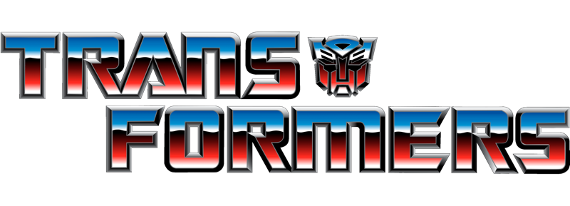
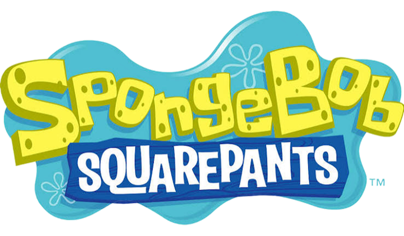
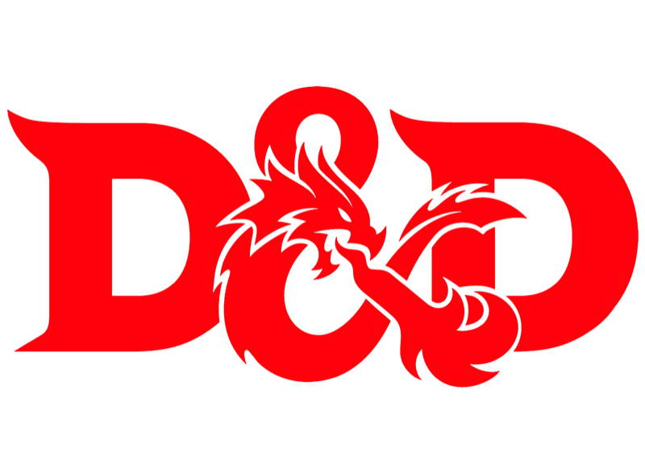
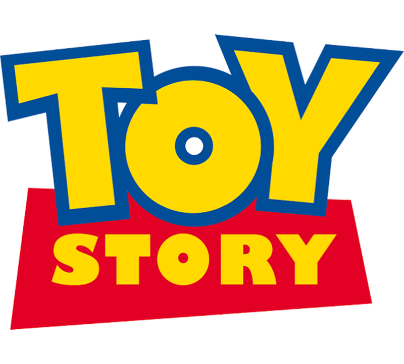
Need factory workflow or commerce automation? Wayfound extends Able’s product and manufacturing knowledge with custom software.
Explore Commerce AI ↗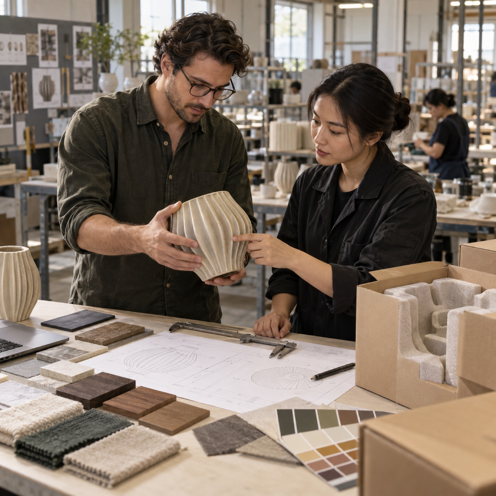
Start a manufacturing project